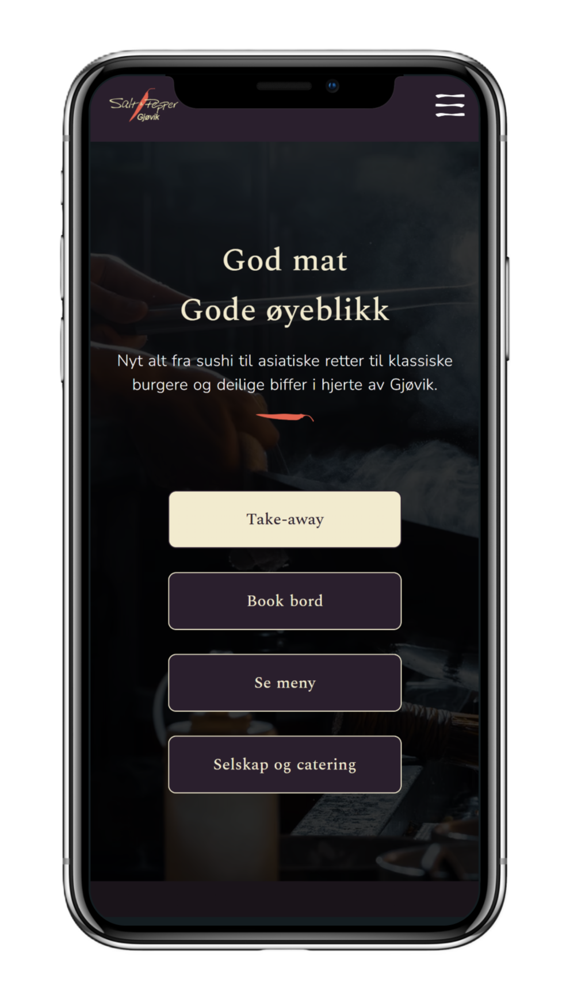
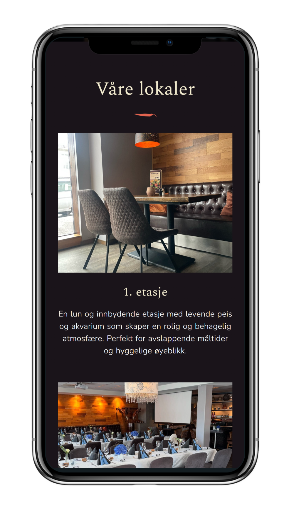
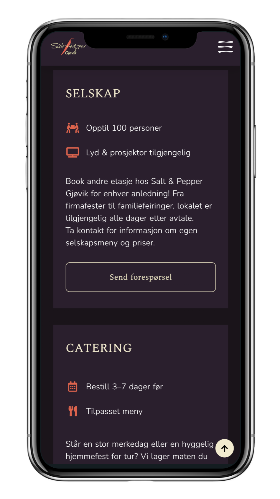

Designprosessen
Jeg startet med å analysere den eksisterende løsningen for å se hvor gjestene møtte på hindringer. Ved å rydde opp i informasjonsarkitekturen, gjorde jeg det logisk og enkelt å finne frem til det folk faktisk leter etter: menyen, åpningstider og bordbestilling.
Siden de fleste gjester besøker siden via mobil, la jeg ekstra vekt på mobilvennlighet. Jeg forenklet navigasjonen og sørget for at knapper og tekst er lette å bruke på små skjermer. Det visuelle uttrykket ble også oppdatert for å gjenspeile restaurantens lune og profesjonelle profil på en mer tidsriktig måte.
Metoder og verktøy
Flyttingen fra Wix til WordPress innebar en teknisk prosess med DNS-oppsett og domenehåndtering. Dette ga meg god innsikt i hele "reisen" fra serveroppsett til ferdig design
Løsningen
Løsningen vår er en bjelle i menyen som åpner et responsivt popup-vindu med varsler som er relevante for deg. Når du klikker på et varsel, blir du sendt videre til den tilhørende siden, og varselet fjernes automatisk fra popupen. Brukerne mottar kun varsler knyttet til de arbeidsområdene de jobber innen, og slipper dermed meldinger som ikke er relevante for dem.
- Optimalisert informasjonsarkitektur: En ryddigere struktur som gjør at gjestene finner viktig informasjon med færre klikk.
- Mobil-først tilnærming: Forenklet flyt og knapper som er tilpasset tommelbruk, noe som gir en mye bedre opplevelse på farta.
- Modernisert visuelt uttrykk: Et design som føles mer "up-to-date" og som faktisk gjenspeiler restaurantens atmosfære og personlighet.



Hva har jeg lært fra dette prosjektet
Gjennom dette prosjektet har jeg fått mye verdifull erfaring som designer. Noen av de viktigste lærdommene er:
- Strukturell forenkling: Hvordan man kan gjøre en side mer intuitiv ved å fjerne støy og fokusere på kjernebehovene til brukeren.
- Plattformbytte: Praktisk erfaring med å flytte innhold og domener mellom ulike systemer (Wix til WordPress).
- Kontinuerlig forbedring: Forståelsen av at UX og UU er prosesser man stadig må utvikle seg i for å holde tritt med nye standarder.